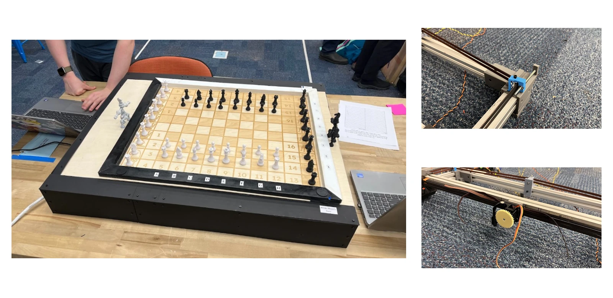

Self Playing Chess Board / Masterpiece
A 35 × 28 in. CoreXY mechanism that moves magnetic chess pieces using a concealed belt-driven gantry.

Project
Goal
The project combined mechanism design, fabrication, electronics, and software to create a chessboard capable of physically moving pieces beneath the playing surface.
Mechanical system
A CoreXY gantry positioned a magnet under the board. A servo-driven rack-and-pinion mechanism raised and lowered the permanent magnet to engage or release chess pieces.
My contribution
- Designed board mounts.
- Co-designed belt tensioners, magnet carriage, and side panels.
- Integrated laser-cut and 3D-printed components into the enclosed assembly.
- Coordinated mechanical interfaces inside the board.
Iteration
The team moved from limited motor-mount adjustment to screw-driven belt tensioners for more controllable tension. Testing revealed flex and play in printed tensioner components, identifying a clear next iteration toward a stiffer mechanism.
Outcome
The board supported computer-vs.-computer and human-vs.-computer play through computer-based move entry. Physical sensing of a human player's move remained a stretch goal.